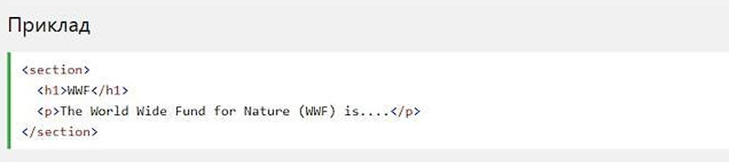
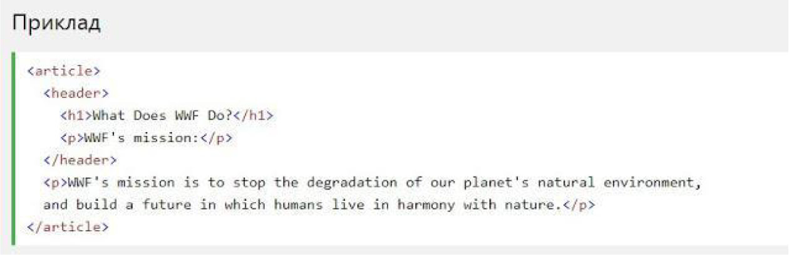

Семантичний елемент чітко описує його значення як для браузера, так і для розробника.
Приклади несемантичних елементів: <div> і <span> -нічого не говорить про його вміст.
Приклади семантичних елементів: <form>,<table>і <article>-чітко визначає його зміст.
Семантичні елементи HTML5 підтримуються у всіх сучасних браузерах.
Крім того, ви можете "навчити" старих браузерів, як обробляти "невідомі елементи".
Прочитайте про це в підтримці браузера HTML5.
HTML5 пропонує нові семантичні елементи для визначення різних частин веб-сторінки:
Елемент <section>визначає розділ в документі.
Згідно з документацією в3к'с HTML5: "розділ представляє собою тематичну угруповання контенту, зазвичай з заголовком".
Домашня сторінка зазвичай може бути розділена на розділи для ознайомлення, змісту і контактної інформації.
Елемент <article> визначає незалежний, автономний вміст.
Стаття повинна мати сенс самостійно, і вона повинна мати можливість читати його незалежно від іншої частини веб-сайту.
Приклади того, де можна використовувати елемент <article> :
Елемент <header> задає заголовок для документа або розділу.
Елемент <header> повинен використовуватися в якості контейнера для вступного змісту.
В одному документі може бути кілька елементів <header> .
У наступному прикладі визначається заголовок для статті:
